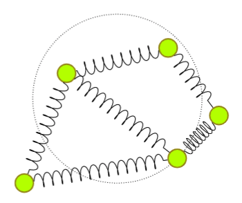

Generic and non-generic
synchronization configurations
in networks of coupled oscillators
Tianran Chen
Department of Mathematics
Auburn University at Montgomery
Joint work with
Evgeniia Korchevskaia and Julia Lindberg
October 3, 2022
School of Mathematics
Georgia Institute of Technology
Overview
-
Coupled oscillators are studied in
biology, chemistry, physics, engineering,
and many other fields.
-
The Kuramoto model models the nonlinear interaction
among coupled oscillators.
-
It is simple enough to be analyzed rigorously
yet complex enough to exhibit interesting emergent behaviors.
-
One emergent behavior is the spontaneous synchronization.
-
We will explore the new insight to this problem
provided by an algebraic/tropical approach.
Oscillators
Real-world motivation:
- heart cells
- neurons in our brain
- chemical oscillators
- electric oscillators.....
Abstraction:
a real variable that can
continuously vary between two states.
A better abstraction:
a function
$x(t) : \mathbb{R} \to S^1$ in $t$.
Boring example:
\[
x(t) = (\cos(w \, t), \sin(w \, t)).
\]
I.e.,
\[
\theta(t) = w \, t
\]
if we focus on phase angle.
Coupled oscillators
We have more interesting behavior when oscillators are coupled.
\[
\frac{d\theta}{dt} =
\quad
\begin{gathered}
\text{One's own} \\
\text{drum beat}
\end{gathered}
\quad
-
\quad
\begin{gathered}
\text{Influence} \\
\text{of others}
\end{gathered}
\]
Two oscillators:
\[
\left\{
\begin{aligned}
\dot{\theta}_0 \;=\;
w_0
\;
-
\;
\text{pulling}(\theta_0,\theta_1)
\\
\dot{\theta}_1 \;=\;
w_1
\;
-
\;
\text{pulling}(\theta_1,\theta_0)
\end{aligned}
\right.
\]
This is a very naive simplification.
It is a limit cycle description of
"weakly coupled oscillators".
Coupling
The "pulling" should be...
-
... a function of phase difference;
-
... 0 when the phase difference is 0 or $\pi$;
-
... anti-symmetric.
These are just reasonable requirements.
Certain variations deviate from these.
What about
\[
\text{pulling}(\theta_i,\theta_j)
=
\sin(\theta_i - \theta_j) ?
\]
This can give rise to spontaneous synchronization
(E.g., sympathetic vibration)
Network of coupled oscillators
We can generalize this model to networks of many oscillators
coupled to one another: with
\[
\frac{d\theta_i}{dt} \;=
\quad
\begin{gathered}
\text{One's own} \\
\text{drum beat}
\end{gathered}
\quad
-
\quad
\begin{gathered}
\text{Influence} \\
\text{of others}
\end{gathered}
\]
There is a long history in studying models of this
form in seemingly independent fields.
- Clock synchronization
- Consensus model
- Power-flow equations
- ......
Kuramoto model
The Kuramoto model is a simple dynamical system that models the
nonlinear interaction among weakly coupled oscillators.
Kuramoto. 1975, Self-entrainment of a population of coupled non-linear oscillators
doi:10.1007/bfb0013365.
- Simple enough to be analyzed
- Complex enough to exhibit interesting emergent behavior
The "classic" form
\[
\frac{d \theta_i}{dt} =
w_i -
\frac{K}{n+1} \sum_{j = 0}^N \sin(\theta_i - \theta_j)
\quad\text{for } i = 0,\ldots,n
\]
-
$n+1$ is the number of oscillators
-
$K$ is the coupling coefficient
-
$w_i$ is the natural frequency of the $i$-th oscillator
Sparsity and nonuniform coupling
More interesting cases
- The coupling strength is not uniform
- Coupling among oscillators is sparse
\[
\frac{d \theta_i}{dt} =
w_i -
\sum_{j \in \mathcal{N}_G(i)} k_{ij} \sin(\theta_i - \theta_j)
\quad\text{for } i = 0,\ldots,n
\]
-
$n+1$ is the number of oscillators
-
$w_i$ is the natural frequency
of the $i$-th oscillator
-
Symmetric coupling coefficients
$k_{ij} = k_{ji} \ne 0$
-
$\mathcal{N}_G(i)$ is the set of neighbors of oscillator $i$
-
A connected graph $G$ encodes the network topology
Synchronization
In the Kuramoto model
\[
\frac{d \theta_i}{dt} =
w_i -
\sum_{j \in \mathcal{N}_G(i)} k_{ij} \sin(\theta_i - \theta_j)
\quad\text{for } i = 0,\ldots,n
\]
frequency synchronization
is reached when all oscillators are tuned to
a common frequency (angular velocity).
-
Oscillators' relative phase angle stop changing
-
The dynamic picture becomes a static picture
Synchronization: a static view
A (frequency)
synchronization configuration
for a Kuramoto network $(G,K,w)$ is a configuration
$(\theta_0,\ldots,\theta_n)$ such that
\[
\frac{d \theta_0}{dt} = \frac{d \theta_1}{dt}
\,=\, \cdots \, = \,
\frac{d \theta_n}{dt}
= c
\]
for some constant $c$ (synchronized frequency).
I.e., solutions to the system of equations
\[
c =
w_i -
\sum_{j \in \mathcal{N}_G(i)} k_{ij} \sin(\theta_i - \theta_j)
\quad\text{for } i = 0,\ldots,n
\]
Synchronized frequency
\[
c =
w_i -
\sum_{j \in \mathcal{N}_G(i)} k_{ij} \sin(\theta_i - \theta_j)
\quad\text{for } i = 0,\ldots,n
\]
under the symmetry assumption $k_{ij} = k_{ji}$,
\[
c = \frac{w_0 + \cdots + w_n}{n+1} = \overline{w}
\]
I.e., the common frequency must be the
mean natural frequency.
We can always normalize the network so that
$\overline{w} = 0$.
And the equations become
\[
0 =
w_i -
\sum_{j \in \mathcal{N}_G(i)} k_{ij} \sin(\theta_i - \theta_j)
\quad\text{for } i = 0,\ldots,n
\]
Kuramoto equations
Synchronization configurations are exactly the solutions
$(\theta_0,\ldots,\theta_n) \in [0,2\pi)^{n+1}$
to the system of equations
\[
0 =
w_i -
\sum_{j \in \mathcal{N}_G(i)} k_{ij} \sin(\theta_i - \theta_j)
\quad\text{for } i = 0,\ldots,n
\]
"Kuramoto system":
$n+1$ equations in $n+1$ unknowns.
Removing redundancy
Only phase difference $\theta_i - \theta_j$
appear in
\[
0 =
w_i -
\sum_{j \in \mathcal{N}_G(i)} k_{ij} \sin(\theta_i - \theta_j)
\quad\text{for } i = 0,\ldots,n
\]
so a solution remains a solution under translation.
We can assume $\theta_0 = 0$.
(equivalent to choosing a rotational frame of reference)
The equations are also linearly dependent: (sum to 0).
So we can discard one equation:
\[
0 =
w_i -
\sum_{j \in \mathcal{N}_G(i)} k_{ij} \sin(\theta_i - \theta_j)
\quad\text{for } i = 1,\ldots,n
\]
in $n$ unknowns $\theta_1,\ldots,\theta_n$:
reduced Kuramoto system
Central questions
\[
0 =
w_i -
\sum_{j \in \mathcal{N}_G(i)} k_{ij} \sin(\theta_i - \theta_j)
\quad\text{for } i = 1,\ldots,n
\]
-
What is the maximum number of solutions? (Is it even finite?)
- Lower bound: $2^n$
- Upper bound: $\binom{2n}{n}$
- Complication: the maximum number is topology-sensitive
-
Are the solutions isolated (0-dimensional) ?
-
J. Baillieul and C. Byrnes, Geometric critical point analysis of lossless power system models, IEEE Trans-
actions on Circuits and Systems, 29 (1982)
-
O. Coss, J. D. Hauenstein, H. Hong, and D. K. Molzahn, Locating and counting equilibria of the Kuramoto
model with rank-one coupling, SIAM J. Appl. Algebra Geom., 2 (2018)
-
S. Guo and F. Salam, Determining the solutions of the load flow of power systems: Theoretical results and
computer implementation, 29th IEEE Conference on Decision and Control, (1990)
-
J. Lindberg, A. Zachariah, N. Boston, and B. Lesieutre, The Distribution of the Number of Real Solutions
to the Power Flow Equations, IEEE Transactions on Power Systems, PP (2022)
-
D. K. Molzahn, D. Mehta, and M. Niemerg, Toward Topologically Based Upper Bounds on the Number of
Power Flow Solutions, 2016 American Control Conference (ACC), (2016)
-
......
It's not algebraic
\[
0 =
w_i -
\sum_{j \in \mathcal{N}_G(i)} k_{ij} \sin(\theta_i - \theta_j)
\quad\text{for } i = 1,\ldots,n
\]
is not algebraic,
but we can make it algebraic!
Why?
Because!
Algebraic formulations
Many different ways to turn this into an algebraic system
-
$s_i = \sin(\theta_i), \; c_i = \cos(\theta_i)$,
and add $s_i^2 + c_i^2 = 1$;
-
half-angle tangent formula
-
exponential formula
$x_i = e^{\mathfrak{i} \theta_i}$, then
\[
\sin(\theta_i - \theta_j) =
\frac{1}{2 \mathfrak{i}}
\left(
\frac{x_i}{x_j} -
\frac{x_j}{x_i}
\right)
\]
it produces the algebraic system
\[
0 =
w_i -
\sum_{j \in \mathcal{N}_G(i)}
\frac{k_{ij}}{2 \mathfrak{i}}
\left(
\frac{x_i}{x_j} -
\frac{x_j}{x_i}
\right)
\quad\text{for } i = 1,\ldots,n
\]
We prefer this one.
Laurent polynomial formulation
System of $n$ Laurent polynomial equations
\[
0 =
w_i -
\sum_{j \in \mathcal{N}_G(i)}
\frac{k_{ij}}{2 \mathfrak{i}}
\left(
\frac{x_i}{x_j} -
\frac{x_j}{x_i}
\right)
\quad\text{for } i = 1,\ldots,n
\]
in $n$ complex unknowns $x_1,\ldots,x_n \ne 0$
($x_0 = 1$ is a constant).
Algebraic geometers can get to work!
- What is the maximum number of solutions? (Is it even finite?)
- Are the solutions isolated (0-dimensional) ?
A complex algebraic relaxation
\[
\begin{aligned}
(\text{T})
\quad
w_i
&-
\sum_{j \in \mathcal{N}_G(i)} k_{ij} \sin(\theta_i - \theta_j)
\\
(\text{A})\quad
w_i
&-
\sum_{j \in \mathcal{N}_G(i)}
\frac{k_{ij}}{2 \mathfrak{i}}
\left(
\frac{x_i}{x_j} -
\frac{x_j}{x_i}
\right)
\end{aligned}
\]
Every real root of (T) corresponds to a complex root of (A).
Only complex roots of (A) on the real torus $(S^1)^n$
($|x_i| = 1$) correspond to real roots of (T).
I.e., this is a relaxation can potentially introduce extraneous solutions.
(A good trade-off)
Digression: 2D Toric Kumamoto problem
\[
0 =
w_i -
\sum_{j \in \mathcal{N}_G(i)}
\frac{k_{ij}}{2 \mathfrak{i}}
\left(
\frac{x_i}{x_j} -
\frac{x_j}{x_i}
\right)
\quad\text{for } i = 1,\ldots,n
\]
Extraneous roots are roots outside the real torus $(S^1)^n$,
i.e., roots with some $|x_i| \ne 1$.
Do they mean anything?

Digression: 2D Toric Kumamoto problem
\[
\left\{
\begin{alignedat}{5}
\dot{\theta}_i =
\omega_i - \sum_{j=0}^n k_{ij} \cosh(\rho_i - \rho_j)
\sin(\theta_i - \theta_j) \\
\dot{\rho}_i =
0 - \sum_{j=0}^n k_{ij} \sinh(\rho_i - \rho_j)
\cos(\theta_i - \theta_j) \\
\end{alignedat}
\right.
\;\text{for } i=1,\dots,n.
\]
- $x_i = e^{-\rho_i + \mathfrak{i} \theta_i}$
- $\theta_i$ is still the phase angle
- $\rho_i = - \ln |x_i|$ measures the radial position
Central questions, relaxed
For the algebraic Kuramoto system
\[
f_i(\mathbf{x}) =
w_i -
\sum_{j \in \mathcal{N}_G(i)}
\frac{k_{ij}}{2 \mathfrak{i}}
\left(
\frac{x_i}{x_j} -
\frac{x_j}{x_i}
\right)
\quad\text{for } i = 1,\ldots,n
\]
-
What is the maximum number of $\mathbb{C}^*$-roots?
(Is it even finite?)
-
Are the $\mathbb{C}^*$-roots isolated (0-dimensional) ?
If the $\mathbb{C}^*$-roots are isolated
then the total number is finite,
and
\[
\begin{gathered}
\text{Maximum} \\
\text{root count}
\end{gathered}
\quad=\quad
\begin{gathered}
\text{``Generic''} \\
\text{root count}
\end{gathered}
\]
Here “generic” means generic choices of parameters
$w_1,\ldots,w_n$ and $k_{ij}$
(which form a Zariski closed subset of the coefficients).
Q1: Generic complex root count
Question.
For generic (real or complex)
natural frequencies $w_1,\ldots,w_n$
and generic
but symmetric
(real or complex) coupling coefficients
$k_{ij} = k_{ji} \ne 0$,
what is the n.o. complex solutions to
\[
0 =
w_i - \sum_{j \in \mathcal{N}_G(i)} k_{ij}
\left(
\frac{x_i}{x_j} -
\frac{x_j}{x_i}
\right)
\quad\text{for }
i = 1,\ldots,n \; ?
\]
Tools:
- Bernshtein’s theorems
- Adjacency polytope bound
- Face bipartite subgraph correspondence
- Structure preserving polyhedral homotopy
Bernshtein’s theorem and the BKK bound
Theorem. (Bernshtein 1975)
For generic choices of nonzero complex coefficients,
the $\mathbb{C}^*$-zeros of the
square Laurent polynomial system $(f_1,\ldots,f_n)$
are isolated and regular,
and the total number is the mixed volume
\[
\operatorname{MV}(
\operatorname{Newt}(f_1),
\ldots,
\operatorname{Newt}(f_n)
)
\]
-
This is the BKK bound
(Bernshtein, Kushnirenko, Khovanskii)
-
$\mathbb{C}^* = \mathbb{C} \setminus \{ 0 \}$,
and $\mathbb{C}^*$-zeros are zeros inside
$(\mathbb{C}^*)^n$
-
$\operatorname{Newt}(f_i)$ is the
Newton polytope of $f_i$
-
$\operatorname{MV}$ is the mixed volume
of $n$ convex polytopes
Bernshtein’s 2nd theorem
Theorem. (Bernshtein 1975)
If for all nonzero vectors $\mathbf{v} \in \mathbb{R}^n$,
the initial system $\operatorname{init}_{\mathbf{v}}(F)$ has
no zero in $(\mathbb{C}^*)^n$,
then all zeros of $F$ in $(\mathbb{C}^*)^n$ are isolated,
and the total number, counting multiplicity, is
$\operatorname{MV}(\operatorname{Newt}(f_1),\dots,\operatorname{Newt}(f_n))$.
The converse is also true when $\operatorname{MV} > 0$.
Laurent polynomial systems satisfies this condition
are said to be Bernshtein-general.
Adjacency polytope
Definition.
For a graph $G = (V,E)$
with $V = \{0,1,\ldots,n\}$,
we define the
(PV-type) adjacency polytope
to be the convex hull of
\[
\nabla_G :=
\{ \mathbf{0} \} \cup
\{
\pm (\mathbf{e}_i - \mathbf{e}_j)
\mid
\{ i, j \} \in E
\}
\]
where $\mathbf{e}_0 = \mathbf{0}$.
(We do not distinguish $\nabla_G$ and its convex hull)
Each edge contribute a line segment through the origin.
$\mathbf{0}$ is an interior point,
but still important when we consider the combinatorial features.
Equivalent to symmetric edge polytope
studied in other fields.
(See, e.g. D'Alì, Delucchi, Michałek. Many
Faces of Symmetric Edge Polytopes. Electron J Comb
29, 2022)
Adjacency polytope and Newton polytopes
The algebraic Kuramoto system
\[
f_i(\mathbf{x}) = w_i - \sum_{j \in \mathcal{N}_G(i)} k_{ij}
\left(
\frac{x_i}{x_j} -
\frac{x_j}{x_i}
\right)
\quad\text{for }
i = 1,\ldots,n,
\]
involves constant terms and monomials $x_i / x_j$ for $\{ i, j \} \in E$.
Therefore,
\[
\begin{aligned}
\nabla_G
&:=
\{ \mathbf{0} \} \cup
\{
\pm (\mathbf{e}_i - \mathbf{e}_j)
\mid
\{ i, j \} \in E
\}
\\
&=
\operatorname{Supp}(f_i)
\; \cup \, \cdots \, \cup \;
\operatorname{Supp}(f_n)
\end{aligned}
\]
It is the Newton polytope of the randomization
$R \cdot F(\mathbf{x})$ for a square matrix $R$
(random linear combinations):
\[
\nabla_G = \operatorname{Newt}( R \cdot F )
\]
Adjacency polytope bound
Lemma.
The number of isolated complex zeros to
the algebraic Kuramoto system
\[
f_i(\mathbf{x}) = w_i - \sum_{j \in \mathcal{N}_G(i)} k_{ij}
\left(
\frac{x_i}{x_j} -
\frac{x_j}{x_i}
\right)
\quad\text{for }
i = 1,\ldots,n,
\]
counting multiplicity, is bounded the normalized volume
\[
\operatorname{Vol}(\operatorname{conv}(\nabla_G)).
\]
This is the adjacency polytope bound.
\[
\begin{gathered}
\text{Generic} \\
\mathbb{C}\text{-root count}
\end{gathered}
\quad\le\quad
\begin{gathered}
\text{Adjacency} \\
\text{polytope bound} \\
\end{gathered}
\]
Why adjacency polytope ?
We know much about
$\nabla_G := \{ \mathbf{0} \} \cup \{ \pm (\mathbf{e}_i - \mathbf{e}_j) \mid \{ i, j \} \in E \}$
Lemma.
(Higashitani, Jochemko, Michałek and C., Davis, Korchevskaia)
-
Faces of $\nabla_G$ correspond to subgraphs of $G$
that are maximally bipartite in their induced subgraphs.
-
Facets of $\nabla_G$ correspond to maximal bipartite subgraph of $G$.
Lemma.
(C., Davis, Korchevskaia)
Facets of $\nabla_G$ are in 1-to-1 correspondence with
"balanced" assignments arc orientations in cut sets of
maximally bipartite subgraphs of $G$.
-
Higashitani, Jochemko, Michałek.
Arithmetic aspects of symmetric edge polytopes. Mathematika 65, 2019.
-
Chen, Davis, Korchevskaia.
Facets and facet subgraphs of adjacency polytopes. Arxiv 2021.
A series of relaxations
For the algebraic Kuramoto system
\[
f_i(\mathbf{x}) = w_i - \sum_{j \in \mathcal{N}_G(i)} k_{ij}
\left(
\frac{x_i}{x_j} -
\frac{x_j}{x_i}
\right)
\quad\text{for }
i = 1,\ldots,n
\]
with parameters $w_1,\ldots,w_n$ (natural frequencies) and
symmetric coupling coefficients $k_{ij} = k_{ji}$,
\[
\begin{gathered}
\text{Real} \\
\text{(isolated)} \\
\text{root count}
\end{gathered}
\;\le\;
\begin{gathered}
\text{Generic} \\
\mathbb{C}\text{-root} \\
\text{count}
\end{gathered}
\;\le\;
\begin{gathered}
\text{BKK} \\
\text{bound}
\end{gathered}
\;\le\;
\begin{gathered}
\text{Adjacency} \\
\text{polytope} \\
\text{bound} \\
\end{gathered}
\]
A reasonable conjecture
\[
\begin{gathered}
\text{Generic} \\
\mathbb{C}\text{-root} \\
\text{count}
\end{gathered}
\;=\;\;
\begin{gathered}
\text{BKK} \\
\text{bound}
\end{gathered}
\;\;=\;
\begin{gathered}
\text{Adjacency} \\
\text{polytope} \\
\text{bound} \\
\end{gathered}
\]
Generic root count result
Theorem. (C., Korchevskaia, Lindberg)
For generic natural frequencies $w_1,\ldots,w_n$ and
generic but symmetric coupling $k_{ij} = k_{ji}$,
the complex zeros of
\[
f(\mathbf{x}) = w_i - \sum_{j \in \mathcal{N}_G(i)} \frac{k_{ij}}{2
\mathbf{i}}
\left(
\frac{x_i}{x_j} -
\frac{x_j}{x_i}
\right)
\quad\text{for }
i = 1,\ldots,n
\]
are all isolated, and the total number
equal to the normalized volume of the adjacency
polytope $\operatorname{Vol}(\nabla_G)$.
\[
\begin{gathered}
\text{Generic} \\
\mathbb{C}\text{-root} \\
\text{count}
\end{gathered}
\;=\;\;
\begin{gathered}
\text{BKK} \\
\text{bound}
\end{gathered}
\;\;=\;
\begin{gathered}
\text{Adjacency} \\
\text{polytope} \\
\text{bound} \\
\end{gathered}
\]
Obstacles
\[
f(\mathbf{x}) =
w_i -
\sum_{j \in \mathcal{N}_G(i)}
\frac{k_{ij}}{2 \mathbf{i}}
\left(
\frac{x_i}{x_j} -
\frac{x_j}{x_i}
\right)
\quad\text{for }
i = 1,\ldots,n
\]
-
In each polynomial, the monomials $x_i/x_j$ and $x_j/x_i$,
must share the same coefficient
$\frac{k_{ij}}{2 \mathbf{i}}$.
-
For any edge $\{i,j\} \in E$, the $i$-th and
$j$-th polynomial always have the terms
$\frac{k_{ij}}{2\mathbf{i}} (x_i x_j^{-1} - x_j x_i^{-1})$ and
$\frac{k_{ji}}{2\mathbf{i}} (x_j x_i^{-1} - x_i x_j^{-1})$.
-
Unless $G$ is the complete graph,
the Newton polytopes are not all full-dimensional.
How to prove this?
There are many ways. We followed a familiar recipe
- Construct a homotopy
- Prove smoothness
- Count the number of homotopy paths
A nonlinear homotopy
Basing on \[
f_i(\mathbf{x}) = w_i - \sum_{j \in \mathcal{N}_G(i)}
\frac{k_{ij}}{2 \mathbf{i}}
\left(
\frac{x_i}{x_j} -
\frac{x_j}{x_i}
\right)
\quad\text{for }
i = 1,\ldots,n
\] we define $H(\mathbf{x},t) =
(h_1,\ldots,h_n)$ \[
h_i (\mathbf{x},t) =
w_i - \sum_{j \in \mathcal{N}_G(i)}
\frac{k_{ij}}{2 \mathfrak{i}} \; t^{\alpha_{ij}} \;
\left(
\frac{x_i}{x_j} -
\frac{x_j}{x_i}
\right)
\quad\text{for } i = 1, \ldots,n
\] with generic but symmetric rational “lifting” values
$\alpha_{ij} = \alpha_{ji} \approx
1$.
Structure preserving polyhedral homotopy
\[
h_i :=
w_i - \sum_{j \in \mathcal{N}_G(i)}
\frac{k_{ij}}{2 \mathfrak{i}} \; t^{\alpha_{ij}} \;
\left(
\frac{x_i}{x_j} -
\frac{x_j}{x_i}
\right)
\;\text{for } i = 1, \ldots,n
\]
with generic but symmetric rational “lifting” values
$\alpha_{ij} = \alpha_{ji} \approx 1$.
defines a structure preserving
polyhedral homotopy
(Huber & Sturmfels.
A polyhedral method for solving sparse polynomial systems.
Math Comput 64, 1541-1555, 1995)
-
At $t=1$, $h_i(\mathbf{x},1) \equiv f_i(\mathbf{x})$
-
Each $h_i (\mathbf{x}, t)$ is holomorphic in $\mathbf{x}$ and $t$
away from $t=0$
-
For any $t \ne 0$, symmetry in the coefficients
is preserved
\[
\frac{k_{ij}}{2 \mathfrak{i}} t^{\alpha_{ij}} =
\frac{k_{ji}}{2 \mathfrak{i}} t^{\alpha_{ji}}
\]
Homotopy paths
\[
0 =
h_i =
w_i - \sum_{j \in \mathcal{N}_G(i)}
\frac{k_{ij}}{2 \mathfrak{i}} \; t^{\alpha_{ij}} \;
\left(
\frac{x_i}{x_j} -
\frac{x_j}{x_i}
\right)
\]
for $i = 1, \ldots,n$ defines
smooth homotopy paths over $t \in (0,1]$.
Under the assumption that $k_{ij}$'s and $w_i$'s
are chosen generically,
\[
\text{N.o. paths} \;=\; \text{Generic root count}
\]
So the root counting question becomes a path counting question.
Side note: the tropical view
Half of the question is tropical: Going back to
\[
f_i(\mathbf{x}) = w_i - \sum_{j \in \mathcal{N}_G(i)}
\frac{k_{ij}}{2 \mathbf{i}}
\left(
\frac{x_i}{x_j} -
\frac{x_j}{x_i}
\right)
\quad\text{for }
i = 1,\ldots,n
\]
We assign the symmetry preserving valuations
\[
\begin{aligned}
\operatorname{val}(w_i) &= 0
&&\text{and} &
\operatorname{val}(k_{ij}) &=
\operatorname{val}(k_{ji}) =
\alpha_{ij}
\end{aligned}
\]
What is the intersection number of the $n$
tropical hypersurfaces
\[
\mathbb{V}(\;\operatorname{Trop}(f_1) \;)
\;\cap\;
\cdots
\;\cap\;
\mathbb{V}(\;\operatorname{Trop}(f_n) \;)
\]
This is the tropical version of the
generic root count question.
Randomization
For a square algebraic system
$F = (f_1,\ldots,f_n)$, analysis can be simplified through
"randomization" (random linear combinations):
For any $n \times n$ nonsingular matrix $R$,
\[
F(\mathbf{x})
\quad\quad\text{and}\quad\quad
R \cdot F(\mathbf{x})
\]
have the same zero set.
So we can study the
"randomized Kuramoto system"
$R \cdot F(\mathbf{x})$ instead.
-
all polynomials in $R \cdot F (\mathbf{x})$
involve all monomials;
-
the Newton polytopes are all identical (unmixed case);
Terminology: Numerical analysts would call $F \mapsto R \cdot F$
"preconditioning" (a standard practice to improve the
numerical condition of systems of equations).
Digression: Why randomize?
Randomization turns a mixed system to an unmixed system
(every polynomial involves every monomial).
-
Tropical intersection $\to$ Stable self-intersection
-
Fine mixed subdivision $\to$ Triangulation
-
Mixed volume computation $\to$ volume computation
Easier?
Volume and mixed volume computations are both #P.
(Dyer, Gritzmann, Hufnagel. On The Complexity of Computing Mixed Volumes. SIAM J Comput 27, 1998)
Digression: Mixed volume vs. volume
Theorem. (C. 2020)
For $m$ distinct points
$\{ \mathbf{p}_1, \dots, \mathbf{p}_m \} \subset \mathbb{R}^n$,
with $m > n$
\[
\operatorname{Vol} (
\operatorname{conv}
\{\,
\mathbf{p}_1, \dots, \mathbf{p}_m
\}
) =
\operatorname{MV} (
\Delta(\mathbf{p}_1), \dots, \Delta(\mathbf{p}_m)
)
\]
where each $\Delta(\mathbf{p}_i)$ is a simplex
of dimension $m-n$ in $\mathbb{R}^m$.
The specialized problem of computing mixed volume of simplices is
at least as "hard" as the general problem of computing volume.
(http://arxiv.org/abs/2108.12875)
\[
\begin{gathered}
\text{General} \\
\text{volume computation}
\end{gathered}
\quad\approx\quad
\begin{gathered}
\text{Very special} \\
\text{mixed volume computation}
\end{gathered}
\]
Back to path counting
We want to count the number of paths over $t \in (0,1]$ defined by
\[
0 =
h_i =
w_i - \sum_{j \in \mathcal{N}_G(i)}
\frac{k_{ij}}{2 \mathfrak{i}} \; t^{\alpha_{ij}} \;
\left(
\frac{x_i}{x_j} -
\frac{x_j}{x_i}
\right)
\;\text{for } i = 1, \ldots,n.
\]
It's much easier to count paths defined by
the randomized version
\[
H^* := R \cdot H = 0
\]
for a generic (nonsingular) square matrix $R$.
The stable self-intersections "points" of $\operatorname{Trop}(H^*)$ are
in 1-to-1 correspondence with cells in a
unimodular triangulation of $\partial \nabla_G$.
And the total number is exactly $\operatorname{Vol}(\nabla_G)$.
Stable self intersection
There are exactly $\operatorname{Vol}(\nabla_G)$ stable
self-intersections of $\operatorname{Trop}(H^*)$.
Each gives rise to a single path defined by
the structure preserving polyhedral homotopy
\[
0 =
h_i =
w_i - \sum_{j \in \mathcal{N}_G(i)}
\frac{k_{ij}}{2 \mathfrak{i}} \; t^{\alpha_{ij}} \;
\left(
\frac{x_i}{x_j} -
\frac{x_j}{x_i}
\right)
\;\text{for } i = 1, \ldots,n.
\]
Therefore
\[
\operatorname{Vol}(\nabla_G)
\;\ge\;
\begin{gathered}
\text{N. o.} \\
\text{paths}
\end{gathered}
\;=\;
\begin{gathered}
\text{Generic} \\
\text{root count}
\end{gathered}
\;\le\;
\operatorname{Vol}(\nabla_G)
\]
Bernshtein-generalness
\[
\begin{gathered}
\text{Generic} \\
\mathbb{C}\text{-root} \\
\text{count}
\end{gathered}
\;=\;\;
\begin{gathered}
\text{Adjacency} \\
\text{polytope} \\
\text{bound} \\
\end{gathered}
\]
We also know that
\[
\begin{gathered}
\text{Generic} \\
\mathbb{C}\text{-root} \\
\text{count}
\end{gathered}
\le
\begin{gathered}
\text{BKK} \\
\text{bound}
\end{gathered}
\le
\begin{gathered}
\text{Adjacency} \\
\text{polytope} \\
\text{bound} \\
\end{gathered}
\]
So they must be all equal,
and the algebraic Kuramoto system is Bernshtein-general.
Recap: Generic root count
Theorem. (C., Korchevskaia, Lindberg)
For generic natural frequencies $w_1,\ldots,w_n$ and
generic but symmetric
coupling coefficients $k_{ij} = k_{ji}$,
the complex zeros of
\[
f(\mathbf{x}) =
w_i - \sum_{j \in \mathcal{N}_G(i)}
\frac{k_{ij}}{2 \mathbf{i}}
\left(
\frac{x_i}{x_j} -
\frac{x_j}{x_i}
\right)
\quad\text{for }
i = 1,\ldots,n
\]
are all isolated, and the total number of solutions
equal to the
normalized volume of the adjacency polytope
$\operatorname{Vol}(\nabla_G)$.
\[
\begin{gathered}
\text{Generic} \\
\mathbb{C}\text{-root} \\
\text{count}
\end{gathered}
\;=\;\;
\begin{gathered}
\text{BKK} \\
\text{bound}
\end{gathered}
\;\;=\;
\begin{gathered}
\text{Adjacency} \\
\text{polytope} \\
\text{bound} \\
\end{gathered}
\]
Computational implications
\[
\text{Generic } \mathbb{C}\text{-roots}
\;=\;
\text{A.P. bound}
\]
The structure preserving polyhedral homotopy is an
optimal homotopy method for solving algebraic Kuramoto equations...
... IF $\mathbb{C}$-roots are needed.
Proposition. (Lindberg, Zachariah, Boston, Lesieutre. 2022)
For tree and cycle networks, and networks
formed by gluing trees and cycles along cut vertices,
\[
\text{Max. $\mathbb{R}$-root count}
\;=\;
\text{A.P. bound}.
\]
(Lindberg, Zachariah, Boston, Lesieutre,
The Distribution of the Number of Real Solutions to the Power Flow Equations.
IEEE T Power Syst PP, 2022).
This vs. the original polyhedral homotopy
Differences:
- Use symmetric lifting values ($\operatorname{val}(k_{ij}) =
\operatorname{val}(k_{ji})$)
- Different start system
Advantages:
- Simpler “tree” starting system (can be solved in linear time)
- Does not require mixed volume computation
- Volume computations are sufficient
- Cells corresponds to arc orientation assignments of spanning trees
of $G$ (There may be shortcuts!)
Non-generic situations
\[
\begin{gathered}
\text{Generic} \\
\mathbb{C}\text{-root} \\
\text{count}
\end{gathered}
\;\;=\;
\begin{gathered}
\text{Adjacency} \\
\text{polytope} \\
\text{bound} \\
\end{gathered}
\]
- when will the actual root count drop below generic root count?
- by how much?
Missing roots: Exceptional couplings
Lemma.
For generic choices of natural frequencies
$w_1,\ldots,w_n$ the zeros of the algebraic Kuramoto system
\[
f(\mathbf{x}) = w_i - \sum_{j \in \mathcal{N}_G(i)} \frac{k_{ij}}{2
\mathbf{i}}
\left(
\frac{x_i}{x_j} -
\frac{x_j}{x_i}
\right)
\quad\text{for }
i = 1,\ldots,n
\]
are all isolated and regular.
(Just Sard's Theorem, restated)
Q2:
Under the assumption of generic $w$'s,
what are the choices of coupling coefficients
$k_{ij}$'s for which
\[
\text{Actual $\mathbb{C}$-root count}
\; < \;
\text{Generic $\mathbb{C}$-root count}
\]
This set is the exceptional coupling coefficients.
Cycle basis description
Proposition.
Let $G$ be a graph consisting of $d$ independent even cycles,
$C_1,\ldots,C_d$ that overlap at a single edge.
Let $U_i \subset \{ -1, 0, +1 \}^{|E(G)|}$,
for $i=1,\ldots,d$ be the set of
balanced primitive cycle vectors
associated with $C_1,\ldots,C_d$.
Then the set of exceptional coupling is the
union of subsets satisfying
\[
\sum_{j=1}^d
(-1)^{|C_{i_j}| / 2} \mathbf{k}^{\vec{\eta}_{i_j}}
= 1
\text{ where }
(\vec{\eta}_{i_1},\ldots,\vec{\eta}_{i_t}) \in
U_{i_1} \times \cdots \times U_{i_t}
\text{ is consistent}
\]
There are a few variations based on graph topology.
General description
Proposition.
Let $\mathcal{B}$ be the set of subgraphs of $G$ that are
- bridgeless (and hence cyclic), and
- maximally bipartite in their induced subgraphs.
Then the set of exceptional coupling coefficients
is the union
\[
\bigcup_{B \in \mathcal{G}} \mathcal{K}(B).
\]
where each $\mathcal{K}(B)$ is the exceptional coupling coefficients
on $B$, similar to that given in the previous
slide.
Example: 4-cycle
There are 4 coupling coefficients
$k_{01},k_{12},k_{23},k_{30} \ne 0$
Proposition.
The $\mathbb{C}$-root count is less than the generic root count
$\operatorname{Vol}(\nabla_{C_4}) = 12$
if and only if
\[
\begin{aligned}
\frac{ k_{01} k_{12} }{ k_{23} k_{30} } &= 1
&&\text{or} &
\frac{ k_{01} k_{30} }{ k_{12} k_{23} } &= 1
&&\text{or} &
\frac{ k_{01} k_{23} }{ k_{12} k_{30} } &= 1
\end{aligned}
\]
Refined root count for $C_4$
Root count drops below the generic root count if and only if
\[
\begin{aligned}
\frac{ k_{01} k_{12} }{ k_{23} k_{30} } &= 1
&&\text{or} &
\frac{ k_{01} k_{30} }{ k_{12} k_{23} } &= 1
&&\text{or} &
\frac{ k_{01} k_{23} }{ k_{12} k_{30} } &= 1
\end{aligned}
\]
By how much?
-
Only 1 out of 3 holds:
10 roots (missing 2),
and all can be real
-
Only 2 out of 3 hold:
8 roots (missing 4),
and all can be real
-
All 3 holds: 6 roots (missing 6),
and all can be real
Balanced subnetwork
Definition.
For graph $G$ that contains a unique cycle $O$,
an acyclic subdigraph $\vec{H}$ supports a
balanced subnetwork if...
-
It has the same n. o. arcs in either orientation
-
\[
\frac{
\text{Product of clockwise $k_{ij}$'s}
}{
\text{Product of counterclockwise $k_{ij}$'s}
}
=
(-1)^{ |O| / 2}.
\]
Balanced subnetworks always come in transpose pairs.
\[
\begin{aligned}
\frac{ k_{01} k_{12} }{ k_{23} k_{30} } &= 1
&&\text{or} &
\frac{ k_{01} k_{30} }{ k_{12} k_{23} } &= 1
&&\text{or} &
\frac{ k_{01} k_{23} }{ k_{12} k_{30} } &= 1
\end{aligned}
\]
Each max. balance subnetwork is -1 root
With this we can rephrase:
For the $C_4$ network
(with generic natural frequencies),
\[
\begin{gathered}
\text{Actual} \\
\text{root} \\
\text{count}
\end{gathered}
\quad = \quad
\begin{gathered}
\text{Generic} \\
\text{root} \\
\text{count}
\end{gathered}
\quad - \quad
\begin{gathered}
\text{N. o. maximum } \\
\text{balanced} \\
\text{subnetwork}
\end{gathered}
\]
Example: 6-cycle case
Generic root count: 60
-
Choosing
\[
[ k_{01}, k_{12}, k_{23}, k_{34}, k_{45}, k_{50} ] =
[ \pm 1, \pm 1, \pm 1, \pm 1, \pm 1, \pm 1 ]
\]
with an odd number of negative choices,
then there will be 20 max. balanced subetworks
(10 transpose pairs), and
\[
\text{Root count} \;=\;
60 - 20 \;=\; 40
\]
-
Choosing
\[
[ k_{01}, k_{12}, k_{23}, k_{34}, k_{45}, k_{50} ] =
[ \pm s, \pm s, \pm t, \pm t, \pm t, \pm t ]
\]
with an odd number of negative choices and
$s \ne t$, then there will be 12 max. balanced subnetworks
(12 transpose pairs),
and
\[
\text{Root count} \;=\;
60 - 12 \;=\; 48
\]
Refined root count unicycle network
Proposition.
Let $G$ be a connected unicycle graph that
contains a unique even cycle $O$.
Then for generic choices of real or complex $w_i$'s,
the $\mathbb{C}$-zero count of the algebraic
Kuramoto system is
\[
2^{ |G| - |O| } \,
\left[
m \binom{m-1}{m/2 - 1} - \beta
\right],
\]
where $\beta$ is the
n.o. maximally balanced subnetworks.
Corollary.
If $O$ is odd,
for any nonzero $k_{ij}$'s
the total number of $\mathbb{C}$-zeros equals the
adjacency polytope bound
\[
\operatorname{Vol}( \nabla_G ) =
2^{\ell} \, m \, \binom{m-1}{(m-1)/2},
\]
Future directions
- Refined root count for networks beyond unicycle networks
- Investigation of max. real root count vs. A. P. bound
- Formula for A. P. bound for all networks
- A graph theoretical method for enumerating cells in a unimodular
triangulation of the A. P. $\nabla_G$.
Non-isolated solution sets
Another way generic root count is broken:
appearance of non-isolated (positive-dimensional) components.
They represent synchronization configurations
with at least one degree of freedom.
-
(Complete graphs) P. Ashwin, C. Bick, and O. Burylko.
Identical Phase Oscillator Networks:
Bifurcations, Symmetry and Reversibility for Generalized Coupling,
Frontiers in Applied Mathematics and Statistics, 2 (2016)
-
(Complete graphs) O. Coss, J. D. Hauenstein, H. Hong, and D. K. Molzahn.
Locating and counting equilibria of the Kuramoto
model with rank-one coupling,
SIAM J. Appl. Algebra Geom., 2 (2018)
-
(Complete graphs and cycles) J. Lindberg, A. Zachariah, N. Boston, and B. Lesieutre.
The Distribution of the Number of Real Solutions to
the Power Flow Equations.
IEEE Transactions on Power Systems, PP (2022)
-
D. Sclosa, Kuramoto networks with infinitely many stable equilibria. (2022)
Theorem. (D. Sclosa)
For every $d \ge 1$ there is a Kuramoto network
whose stable equilibria form a manifold of dimension $d$
Constructing positive-dimensional solutions
Proposition.
Let $G$ be a unicycle graph on $n+1$ nodes that contains a unique even cycle $O$.
Suppose the coupling coefficients satisfy:
-
$(G,K)$ contains a balanced subnetwork $(\vec{H},K)$;
-
$|k_{ij}|$ are identical for edges on $O$.
Then algebraic Kuramoto system derived from the network
of identical oscillators has a positive-dimensional $\mathbb{C}^*$-zero set.
Indeed we can construct a $\mathbb{C}^*$-orbit
\begin{align*}
\begin{bmatrix}
x_1(\lambda) &
\cdots &
x_m(\lambda)
\end{bmatrix}
&=
(
\lambda \cdot
\boldsymbol{\eta}_{\vec{T}} \circ
(\mathbf{k}(\vec{T})^{-I})
)^{Q(\vec{T})^{-1}}
\\
x_i &= \pm x_{\pi(i)}
\quad\text{for } i = m+1, \ldots, n,
\end{align*}
(Require further explanation) Main point:
It contain an 1-dimensional orbit
parametrized by a system of Laurent monomials.
Real-orbits
Corollary.
...... Furthermore, if $k_{ij}$'s are all identical,
then the $\mathbb{C}^*$-orbit constructed
contains a $S^1$-robit in the real torus.
The original Kuramoto equations
will have positive-dimensional
real solution components.
For the 4-cycle example,
when the natural frequencies are identical,
and $k_{ij}$'s are identical,
we have 1-dimensional solution sets
\[
\left\{
\begin{aligned}
\theta_0 &= 0 \\
\theta_1 &= t + \pi + \sigma^{10} \\
\theta_2 &= \pi + \sigma^{12}_{10} \\
\theta_3 &= t + \sigma^{30} \\
\end{aligned}
\right.
\quad
\left\{
\begin{aligned}
\theta_0 &= 0 \\
\theta_1 &= \sigma^{10} + t \\
\theta_2 &= \pi + \sigma^{21}_{10} \\
\theta_3 &= \sigma^{30} - t
\end{aligned}
\right.
\quad
\left\{
\begin{aligned}
\theta_0 &= 0 \\
\theta_1 &= \sigma^{10} - t \\
\theta_2 &= \sigma^{21}_{10} -2t \\ %\sigma(k_{21}/k_{10}) \\
\theta_3 &= \pi + \sigma^{30} -t \\
\end{aligned}
\right.
\]
$\sigma$'s are phase shift values, $0$ or $\pi$,
that only used to adjust for the signs of $k_{ij}$'s
(not very important).
Beyond unicycle networks
Proposition.
Suppose $G$ consists of $d$ independent even cycles
$C_1,\ldots,C_d$ that share a single edge $e$,
then with the choice of the coupling coefficients
\[
k_{ij} =
\begin{cases}
sd &\text{if } \{i,j\} = e \text{ (shared edge)}\\
s &\text{othewise},
\end{cases}
\]
for any $s \in \mathbb{C}^*$,
and identical natural frequencies,
the algebraic Kuramoto system
has a positive-dimensional $\mathbb{C}^*$-zero set.
There is a similar $\mathbb{C}^*$-orbit formula
that parametrizes an 1-dimensional orbit
inside the zero set.
Corollary.
...... there also can be real orbits
in the solution set.
Example: 2 cycles sharing an edge
The construction produces the
1-dimensional real solution set
\[
(\theta_0,\theta_1,\theta_2,\theta_3,\theta_4,\theta_5) =
(
0,
t + \pi,
0,
t,
\pi,
t
)
\]
This is one of many real orbits.
Observation:
The positive-dimensional solution sets
constructed this way are actually
solution set of certain initial systems!
Open problems:
-
Are there positive-dimensional solution sets
other than the $\mathbb{C}^*$-orbits we constructed here?
-
Can positive-dimensional and isolated solutions coexist?
-
Stability analysis
Thank you!
https://www.tianranchen.org/research/papers/krootcount.pdf
https://arxiv.org/abs/2107.12315
http://arxiv.org/abs/2108.12875
Research supported, in part, by National Science Foundation,
and Auburn University at Montgomery via
Grant-In-Aid program, PIL program,
and undergraduate research experience program.